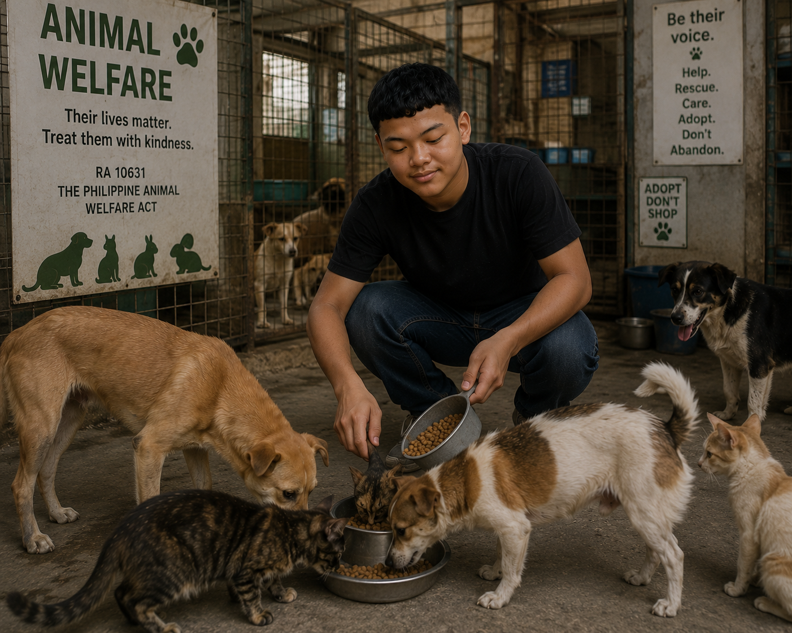

Animals are not just part of our surroundings.

Care is a responsibility, not just affection.
This highlight represents the everyday responsibility of caring for an animal that depends on people.
Animal welfare means protecting animals from unnecessary pain, suffering, abuse, and neglect. In the Philippines, this is not only a moral responsibility; it is also covered by the Animal Welfare Act, as amended by Republic Act No. 10631.
Domestic animals such as dogs, cats, pigs, cows, and chickens are part of daily Filipino life. They may provide companionship, food, livelihood, or other forms of support. Because many domestic animals depend on humans, responsible care includes adequate food and clean water, safe shelter, veterinary care, protection, and attention to their health and behavior.
Wild animals matter for a different but equally important reason. They are part of ecosystems and biodiversity. The Philippines is home to a large number of fauna species, including many species found nowhere else. Protecting wildlife therefore means protecting both animals and the habitats that allow populations to survive.
Animal cruelty can take obvious forms, such as intentionally injuring an animal, but neglect can also cause suffering. Withholding food or water, abandoning an animal, or failing to provide necessary care can have serious consequences. Responsible ownership means recognizing that keeping an animal is a long-term commitment.
Domestic
Companionship, food, livelihood, and daily human care create a strong responsibility for owners.
Wild
Wildlife contributes to ecosystems and biodiversity and needs protection of its natural habitat.
Everyone
Animal welfare is a shared responsibility involving owners, communities, professionals, and authorities.
Research basis
- Republic Act No. 10631, amending the Animal Welfare Act of 1998.
- Philippine Statistics Authority information on fauna and endemic species.
- Philippine Animal Welfare Society information on animal welfare and responsible care.